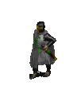
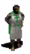
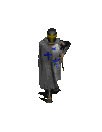

Seiten: Links und Tips für Burgenfreunde/Castles and Forts 1 2 3 4 5 6 7 8 9 Gast im Schloß:10 Mittelalter und andere historische Epochen:11 Schlösser zu verkaufen/Castles for Sale:12 Kunsthandel/Antiquitäten/Antics/Antiques/Fine Art: 13
Konrad Fischer Links und Tips
für Burgenfreunde/Castles and Forts 6
Hier finden Sie Links zu Burgen und Schlössern sowie zugehörigen Informationen der Länder bzw. historischen Regionen Österreich,
Habsburger Reich / Monarchie, Ungarn, KuK-Monarchie, Preußen (auch Ostpreußen), Deutschordensland, Deutscher Orden, Ordo Teutonico,
Polen, Niederlande / Holland, Siebenbürgen, Rumänien ... Lassen Sie sich faszinieren von den Burgen und Schlössern der betreffenden
Lande und Orte, der blutigen und unblutigen Geschichte einer einst christlichen Kultur und ihrer würdigen und unwürdigen Erben. Machen
Sie sich selbst ein Bild von den Nachkommen einstiger Herrschaft, egal ob Adel, Kirche, Kloster und Orden. Und genießen Sie die
Möglichkeiten des Internets, wo Sie überall hinsurfen können, ohne den Platz vor Ihrem Bildschirm aufgeben zu müssen. Mein Tipp:
Selber an die Orte der Begierde zu reisen, ist trotzdem schöner. Nutzen Sie die Informationen zur Reisevorbereitung ... Viel Spaß -
wie auch immer ... und bitte nicht wütend werden, wenn mal wieder ein Link abgestorben ist, ich bin daran unschuldig ...
Links und Tips
für Burgenfreunde/Castles and Forts 6
Hier finden Sie Links zu Burgen und Schlössern sowie zugehörigen Informationen der Länder bzw. historischen Regionen Österreich,
Habsburger Reich / Monarchie, Ungarn, KuK-Monarchie, Preußen (auch Ostpreußen), Deutschordensland, Deutscher Orden, Ordo Teutonico,
Polen, Niederlande / Holland, Siebenbürgen, Rumänien ... Lassen Sie sich faszinieren von den Burgen und Schlössern der betreffenden
Lande und Orte, der blutigen und unblutigen Geschichte einer einst christlichen Kultur und ihrer würdigen und unwürdigen Erben. Machen
Sie sich selbst ein Bild von den Nachkommen einstiger Herrschaft, egal ob Adel, Kirche, Kloster und Orden. Und genießen Sie die
Möglichkeiten des Internets, wo Sie überall hinsurfen können, ohne den Platz vor Ihrem Bildschirm aufgeben zu müssen. Mein Tipp:
Selber an die Orte der Begierde zu reisen, ist trotzdem schöner. Nutzen Sie die Informationen zur Reisevorbereitung ... Viel Spaß -
wie auch immer ... und bitte nicht wütend werden, wenn mal wieder ein Link abgestorben ist, ich bin daran unschuldig ...
Die Habsburger-Monarchie - Kommission für die Geschichte der Habsburgermonarchie
Via imperialis - die schönsten Burgen, Schlösser und Stifte Österreichs
Schloßhotels - Gastliche Burgen und Schlösser Österreichs (mit Gratiskatalog!)
Schloß Schönbrunn in Wien
Burgen und Schlösser in und um Salzburg
 Schloß
Orth am Traunsee/Gmunden (Zeichnung: Konrad Fischer)
Schloß
Orth am Traunsee/Gmunden (Zeichnung: Konrad Fischer)
Schloß Gobelsburg: Geschichte und Architektur - Eine schöne Adresse auch für Weinliebhaber
Renaissance-Festungsanlage Bad Radkersburg
Altijd welkom bij de Nederlandse Kastelenstichting - Burgen und Schlösser der Niederlande/Hollands - eine Topseite der Schlösserstiftung mit Info zu allen öffentlich zugänglichen Objekten.
Die Kirchenburg in Tartlau, Siebenbürgen (Hier war mein Großvater Pfarrer)
Siebenbürger WebRing <>Geschichte,
Kultur und Landeskunde Siebenbürgens
<>Die Landler- Geschichte der deutschen Siedler in Siebenbürgen
<> Uwe Kroners Homepage: Siebenbürgenreisen
<> Kronstadt<> Siebenbürger
Sachsen in Baden-Württemberg
Dr. Gabriele Mergenthaler: Preisgabe,
Sichern, Konservieren, ... ? Zur Situation der kirchlichen Denkmalpflege und Kirchenburgen in Siebenbürgen
www.civertan.hu
- Gigantische Datenbank mit Fotos und historischen Postkarten von Burgen, Schlössern, Baudenkmalen und Ortsansichten in Ungarn
Schlösser in Ungarn: morphe.de/schloesser-ungarn.html
Ungarisches Tourismusamt - Ungarn's Schlösser
Várak Magyarországon - Ungarns Burgen und Schlösser
Königliches Schloss Gödöllo/Ungarn
www.sehenswuerdigkeiten.info/
- Ungarische Burgen und Schlösser
Umfangreiche Ungarische/Internationale Themen-Linksammlungen:
castrumbene.lap.hu/: Burgenbau
www.varepiteszet.lap.hu/ : Burgenbau
www.foldvarak.lap.hu/: Erdburgen
www.felvidekivarak.lap.hu/: Slowakische Burgen
www.erodtemplom.lap.hu/: Kirchenburgen
legiregeszet.lap.hu/: Luftbildarchäologie
erod.lap.hu/: Burgen, Kastelle und Forts
Malbork / Marienburg 1 <> Malbork / Marienburg 2 <>

The TEUTONIC ORDER - Artikel der kath. Enzyklopädie < Ordo
Teutonicus (OT) - Deutscher Orden - Teutonic Order in Österreich <
Ordo
Teutonicus (OT) - Deutscher Orden - Teutonic Order in Österreich <
> Kurze Geschichte des OT <
> Preußen <> Das inzwischen aufgegegebene bayerische Projekt des Deutschen Ordens (Vorsicht, bissige Kommentare) <> P. Jens J. Bergmann OT, virtuelle Kirchenführung durch Maria Birnbaum u.v.a. Info> < >
Der Deutsche Orden in Deutschland - Deutsche Brüderprovinz
>
Der Deutsche Orden in Deutschland - Deutsche Brüderprovinz
Anregungen, Ergänzungsvorschläge? -